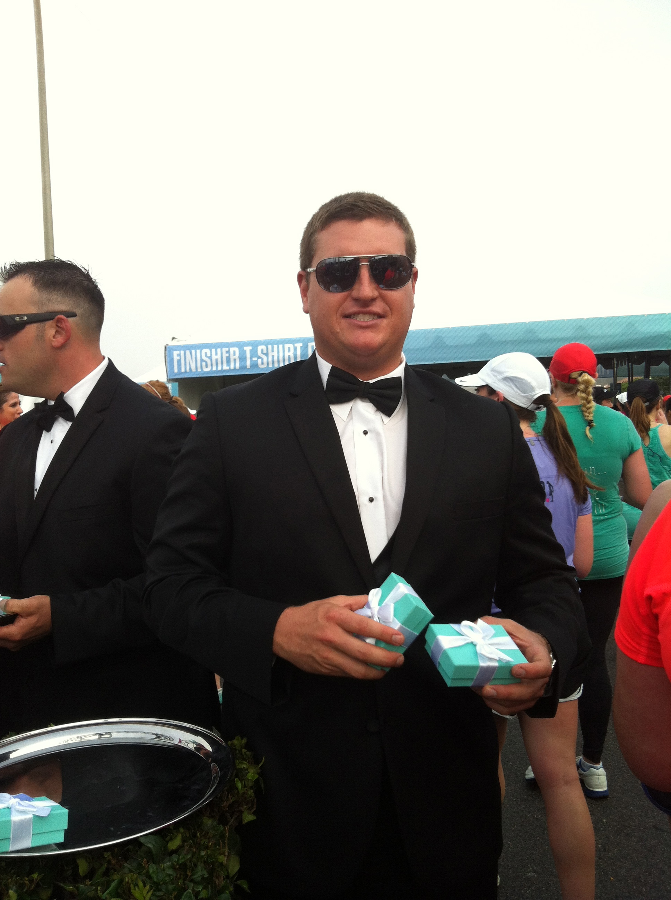
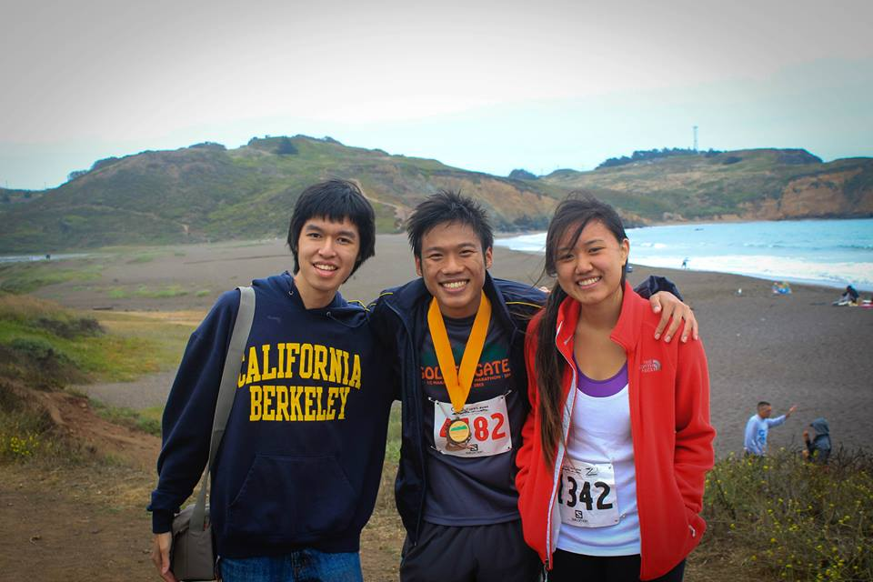

10/14/12: Nike Women's. My first half marathon! We got Tiffany & Co. necklaces. It was super exciting.

7/14/13:
My latest run
.
It was up in Sausalito. Quite the hilly half marathon. It took me forever to finish. My friend Alex(pictured with the medal), ran the full marathon.
I'm looking forward to the Berkeley Half next month! It's the first time they're running it. .
Impressive long runs that I want to remember
9/30/13: 13 miles. Johann from run club psychologically helped me to conquer the
13 mile
mark.